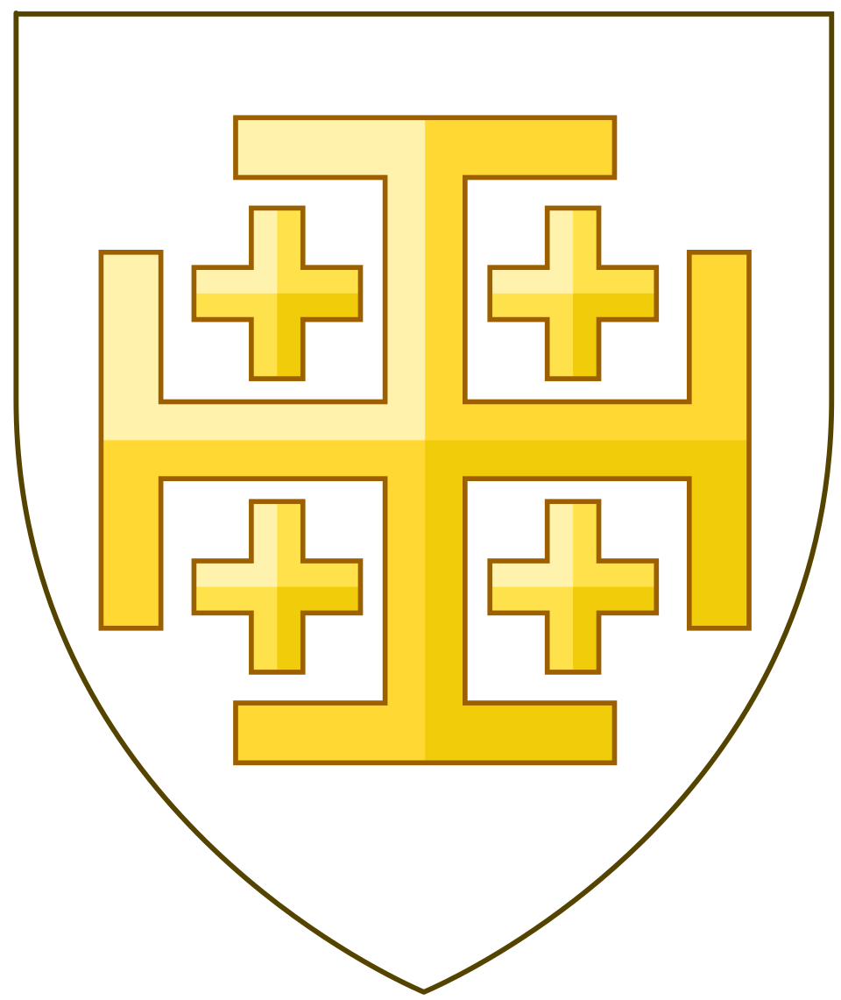

Between 1099 and 1291, a network of crusader states held the eastern Mediterranean, a region known to them as Outremer. At its center stood the Kingdom of Jerusalem, the crown jewel of western Christendom. Its frontier was built in stone — castles, walled towns, and watchtowers strung along ridge and coast.
CrusaderAtlas attempts to map that world onto the present. Every fortress, church, and battlefield is placed on a modern map, with each location carefully curated: who held it, when it fell, and what remains. Open a marker to explore further — full accounts, links to Wikipedia, and, where possible, photographs of the site as it stands today.
Between 1099 and 1291, the crusader states held a fortified frontier across the eastern Mediterranean — a region known to them as Outremer. CrusaderAtlas places every castle, church, and battlefield on a modern map. Tap a marker for the full account, Wikipedia links, and photographs of what survives today.
Explore the kingdom through its layers. Trace the twenty-two baronies that shaped its political landscape, follow the battles and sieges that defined its history, or move along the pilgrim and trade routes that sustained it.
Most histories of the Crusader states unfold on the page, where geography becomes abstract and details become muddled. Here, it does not. Every name has a coordinate, every campaign has a route, and every lordship has an outline. The atlas treats the map as the primary text — and the kingdom as something you can see, not just read.
What survives, where it stood.
CrusaderAtlas is free and ad-free. If it's been useful to you, you can support its upkeep at ☕ ko-fi.com/yotamkatz.